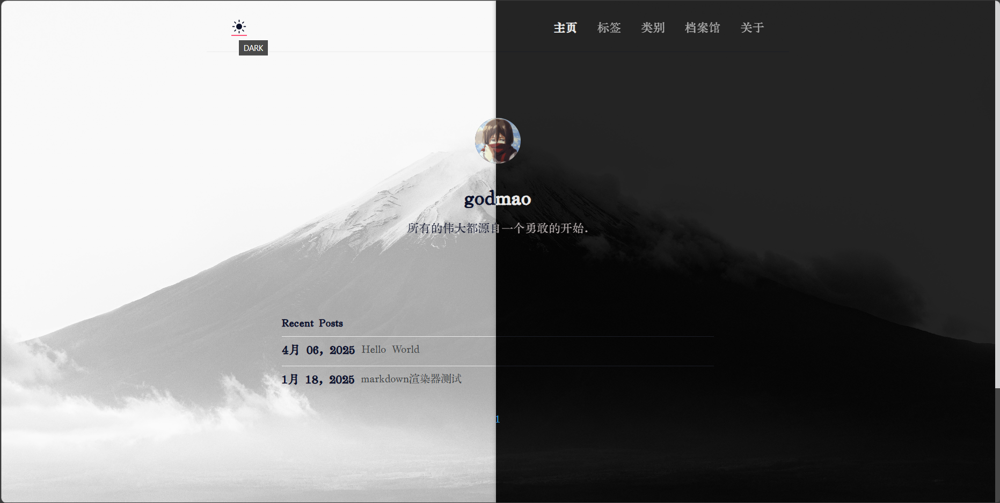
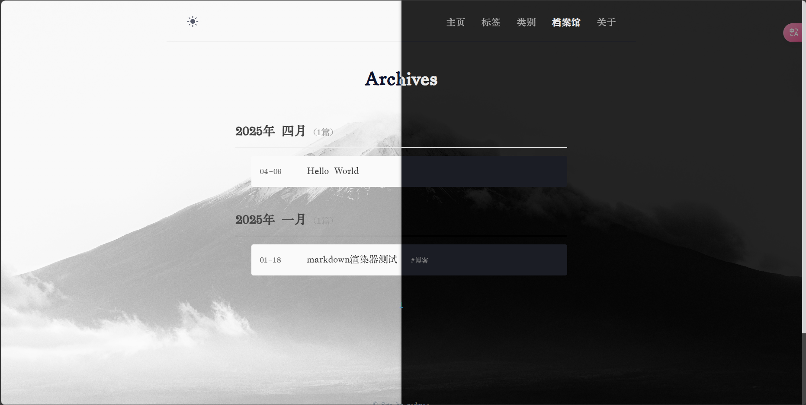
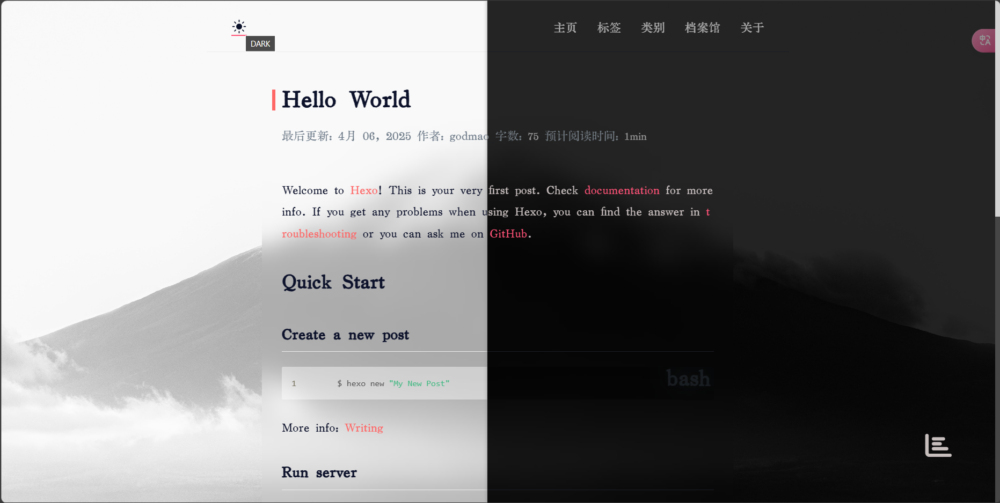
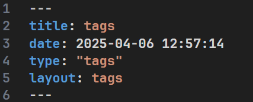

说明
本主题是根据dewjonh的hexo主题Klise改的，我非常喜欢这款主题，但是由于此主题原作者好像不再维护，对hexo的现版本（2024）的适配不太好，于是便自己修修补补用着🙂但是由于我没有太多的精力分配在前端上，所以有些代码可能有些不专业，希望各位大佬见谅并指正。当然如果有任何bug请尽管issue，我会尽力修复！
主题概览



相较于原版有何改动
- 😢把scss全编译为css了，只有一个main.css文件，包含了所有的渲染样式…不过不用担心我注释了嘻嘻🤓
- 将原主题的深色模式进一步适配，并修改了一些元素的显示风格。
使用方法
首先，
你需要下载一个字数统计插件:
npm install hexo-wordcount --save如果不想要下载或无法下载成功，你也可以放弃字数统计功能。前往主题文件夹下的layout\post.ejs删除
字数: <span class="post-count"><%= wordcount(page.content) %></span>
预计阅读时间: <span class="post-count"><%= min2read(page.content) %>min</span>两行。
然后，
安装主题文件
git clone https://github.com/g0dmao/hexo-theme-Klise-enhanced.git将主题根目录的_config.hexo-theme-Klise-enhanced.yml移动到博客根目录。你可以打开该文件进行主题的一些配置。
在博客配置文件_config.yml中启用主题。
最后，
enjoy！
个性化部分
自定义背景
打开主题文件夹下的source\css\main.css在头部修改，可以自定义明暗模式下不同的背景，已做好注释。
当网页失去焦点时标签页标题的显示文字
打开主题文件夹下的layout\layout.ejs 修改document.title即可。
<script defer>
document.addEventListener('visibilitychange', function () {
if (document.visibilityState == 'hidden') {
normal_title = document.title;
document.title = '点一下';
} else document.title = normal_title;
});
</script>可选
你可以安装如下插件获得更好的浏览体验。
hexo-renderer-markdown-it-plus
不使用自带的md渲染器。使用markdown-it渲染器，丰富的插件提供更好的md浏览体验。
hexo-tips
在文章中生成各种提示卡片，此主题已做好适配。
hexo-blog-encrypt
文章加密插件。
可能的问题
tags、categories页面显示不正确
首先检查页面的路径设置是否正确。若正确则试着在相应页面的index.md 里添加type和layout标签：

tags页面 type、layout 为tags。
categories页面 type、layout 为 categories。